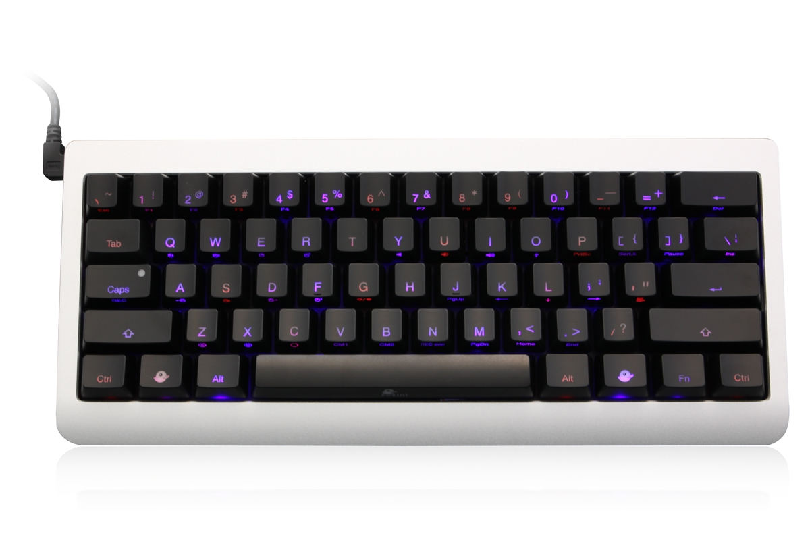
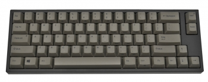
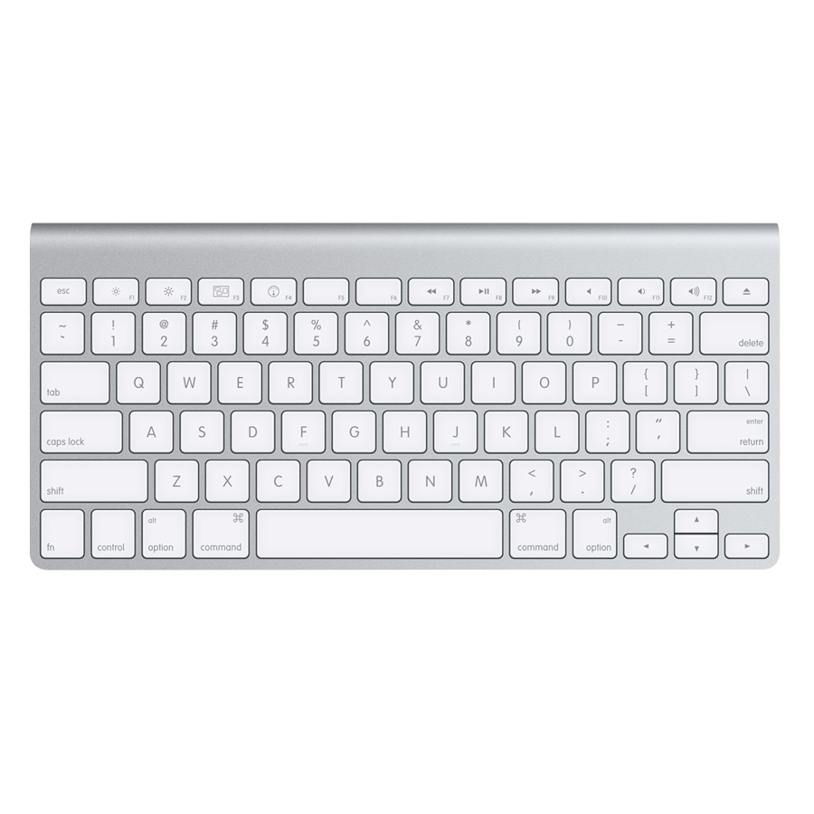
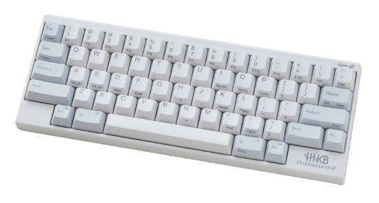

要買機械式鍵盤之前，我們得先好好的了解一下它，畢竟一個機械式鍵盤是 2 千元以上的價位，機械式鍵盤又分了好幾種軸承、尺寸，每一種都提供不同的打字感覺與聲響，不管是哪一種機械式鍵盤，打字的感覺都要比一般薄膜式好多了，尤其是我平常在用的"青軸" 機械式鍵盤，每個按鍵按下去的聲音都鏗鏘有力，打字時聽到一個清脆的聲音，會有種某明的節奏感，越打心情就越好。
機械式鍵盤軸承
機械式鍵盤軸承會用顏色來區分，不同的顏色有不同的敲擊感覺，有些機械式鍵盤只要輕輕一按就能觸發按鍵，而有些聲音很大聲，有些反彈力道大，看個人不同的要求，每一種軸承都有其喜好者。
| 軸承 | 聲音 | 按鍵力道(克) |
|---|---|---|
| 青軸 | 大 | 50g |
| 紅軸 | 小 | 45g |
| 黑軸 | 小 | 60g |
| 茶軸 | 中 | 55g |
| 綠軸 | 大 | 80g |
各種軸承按壓過程圖示


青/茶軸
茶軸和青軸在打字時，會有觸動按鍵的手感，這樣使用者才知道有成功按到按鍵，從上圖可以看，茶軸和青軸按鍵壓到一半時，會有一個小小的卡榫，讓你感受到一點點的阻力，這樣才會有觸動按鍵的感覺，這點是薄膜式鍵盤完全比不上的，而青軸的觸動手感最明顯，像傳統打字機一樣，按一下會有 clicky 一聲，很有節奏的敲擊感。
茶軸的按鍵觸動感會比青軸弱一些，而聲音(噪音)也比較小。
紅/黑軸
黑軸與紅軸按鍵為線性按壓，按鍵直上直下，觸發快速，打字也會比較快，而紅軸的壓按力道又比黑軸更輕，紅/黑軸在按壓的過程式沒有受到任何阻力，所以聲音小，按下按鍵也比較沒有感覺。
紅/黑軸還有個點不同，就是黑軸必需按壓較深才會觸動按鍵，所以黑軸比較不被因為輕輕一按，就送出字母，但是打字的速度也會稍稍被拖慢一點。
靜音紅軸
靜音紅軸的價格比紅軸貴，優點是按下去真的沒有聲音，可借它的觸感有點像薄膜式，按習慣紅軸的人應該會不習慣靜音紅軸，因為按的力道變大( 我的個人感覺)，我目前有一把靜音紅軸，後來不習慣就把 Enter,Shift , Backspce, Space 這幾個大鍵換個紅軸，原因是我的小姆指沒什麼力，按靜音紅軸久了，小姆指就好痛 !!! 想玩靜音紅軸的人最好先去試按。
各種軸承的聲音
聲音的大小也會嚴重影響到購買的意願，像我同事就有明確的表示，不希望我在公司用聲音很大聲的青軸鍵盤 Q _ Q ，就算是在家裡使用，你也要考慮到家人、小孩與鄰居，如果你深夜不睡覺使用鍵盤，很可能會吵到家人無法入睡，當年還是學生的時候，光是深夜敲打一般的薄膜式鍵盤，我耳朵敏感的室友就受不了。
機械式鍵盤有一種自已降低音量的方式，就是自行安裝消音環 O-ring，大部分的機械式鍵盤都會附贈拔鍵器，先用拔鍵器把帽蓋拔出，裝入 O-ring ，再把帽蓋裝上去就好了，難的是 100 多顆按鍵要手動一個一個裝上 O-ring 。
聲音比較由大至小： 綠軸 > 青軸 > 茶軸 > 紅軸 > 黑軸 > 靜音紅軸 (Silent Red Cherry )。
以下是我從 youtube 找的機械式鍵盤試用的聲音：
黑、紅、青、茶，灰軸的聲音
茶軸的聲音
紅軸與青軸的聲音比較
國外聲音測試： 有紅、黑、茶、青軸，很清楚的展示，對聲音很在乎的人一定要看這個 video。
國外有人自行在鍵盤上加了 O-ring 降低按鍵聲音，並拍影片放上 youtube，有茶軸，青軸跟黑軸的測試。
鍵盤尺寸
鍵盤尺寸可以分成三種，分別是 100%, 80%, 60%，100% 是一般常見的大鍵盤，而 80% 則是去掉數字鍵， 60 % 則是去掉方向鍵整個區塊。
生產機械式鍵盤的廠商有： Ducky, Cherry, Filco, Realforce, Ione, Logitech 等等，你可以自已上網查查他們有沒有出你要的尺寸。
60% 機械式鍵盤
| 鍵盤名稱 | 尺寸 | 圖片 |
|---|---|---|
| Ducky mini | 60% |  |
| Leopold FC660C (電容式) FC660M (機械式) |
70% |  |
| Mac Wireless | 60% |  |
| HHKB ( Happy Hacking Keyboard) (電容式鍵盤) |
60% |  |
| Paradise V60 | 60% | |
| KBT pure pro | 60% | |
| Vortex POK3R | 60% |  |
| DIY GH60 | 60% |  |
60% 的機械試鍵盤很難買到，賣的商店也不多，以下是一些我有找到的 60% 鍵盤，其中 HHKB 是日本生產的電容式鍵盤，"Mac Wireless keyboard" 則不相容於 windows ，下手買的時候要特別注意。
Leopold FC660C 雖然是 70% 鍵盤，但它有內建方向鍵，若不習慣沒方向鍵的鍵盤，就可以考慮這一組。
Vortex POK3R 這把鍵盤是台灣生產的，但是在台灣沒有經銷商， vortex 這家公司也沒有要賣散客，只能去 https://mechanicalkeyboards.com/ 買，從美國買鍵盤光是運費就要一 千出頭，另一個選擇是去淘寶買 iKBC 出的 Poker / Poker2 / Poker3 。
我原本有想要買 Pok3r / poker 系列的鍵盤，因為它號稱全鍵硬體編程，讓我們可以自定義按鍵輸出，但後來我在網路上找了很多文章，發現它可以設定的只有 1. 單鍵 binding (例如 A => xxx, Win => ctrl)， 2. Fn+單鍵 binding (例如 Fn+A => ←)，而我的習慣有一項是 "Ctrl + Alt + j" => "home"，所以這把鍵盤沒達到我的標準。
GH60 只是一塊PCB 板，這塊 PCB 板就是機械式鍵盤的核心材料之一，我們可以自已買材料來組裝擁有個人風格的鍵盤，有興趣 DIY 鍵盤的話，可以參考我的這篇文章。
80% 機械式鍵盤
| 鍵盤名稱 | 尺寸 | 圖片 |
|---|---|---|
| Realforce 87u | 80% |  |
| Ducky One | 80% |  |
小心皮革漆
許多黑色的鍵盤表面都會塗一層皮革漆，皮革漆很不耐用，兩年內皮革漆就會開始熔化，表面變成黏黏的很噁心，所以買鍵盤的時候要特別留意鍵盤是否有塗皮革漆，拒買!。
哪裡可以買
- https://mechanicalkeyboards.com/ 這個國外網站有各式各樣的鍵盤，但是我沒在這買過。
- https://tw.bid.yahoo.com/tw/booth/PC-PARTY-Y6527527667 ：Yahoo 拍賣/商城也都有在賣機械式鍵盤。
- 我的青軸鍵盤是在台北光華"金鍵盤"買的，地點不太好找，要問一下隔壁的小攤阿姨。
- 光華總騏也不錯，現場提供許多機械式鍵盤可以試打。
- Leopold 台灣目前只有 pchome 這家商店買得到： http://www.pcstore.com.tw/happyfinger/S017JT4.htm ，不過他們的軸選擇不多，像是我要的紅軸就沒有，或是直接到韓國網站買 http://www.leopold.co.kr/ 。